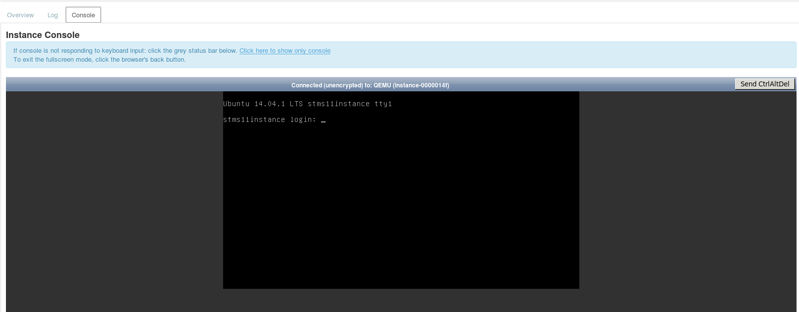

Emacs Cheat Sheat
Table of Contents
1 Using OpenStack
Step 1 - Create and Instance
- Go to http://cloud.bourne-grammar.lincs.sch.uk/horizon/
- Log in using your school credentials.
- On the left hand side of the screen you should see a menu where you can access your instances.
- Click on the button to launch a new instance
- Use the form to setup your instance settings. Give your instance a sensible name of your own though.
- Click on the Post-Creation tab
- Copy and paste the following code into Customization-Script box.
#cloud-config
password: mysecret
chpasswd: { expire: False }
ssh_pwauth: True
- Then click the Launch button
Step 2 - Setup using the Cloud-Console
- After a minute or two your instance will be ready to use
- Click on the blue hyperlink to view your instance.
- From here you can access your instance via the terminal.

- If you can't seem to type in the terminal, click on the grey area of the screen.
- Your username will be
ubuntuand your password will bemysecret

Step 2 - Settin up your account
- You probably don't want the username
ubuntuso let's add a new user account. - Replace newUser with the username you want to use
sudo adduser newUser
- You'll be prompted to give the user a UNIX password and enter some information.
- Next you'll want the new user to have sudo privaledges
sudo adduser newUser sudo
- We can now switch to that user
exit
- Let's delete the old user now, to lock down our instance a little.
sudo userdel -r ubuntu
Step 2 - Setting up your software
- First update and upgrade your instance
sudo apt-get update sudo apt-get upgrade
- Now we'll need a few packages. Emacs for writing text, cifs-utils for mounting windows drives and git for version control.
sudo apt-get install emacs24 cifs-utils git
- This one might take some time.
Step 2 - Mounting Windows folders
- You'll want to mount your Windows Home Folder securely.
- First we'll need to create a mount point
sudo mkdir /media/windows
- First let's create a file to save your username and password.
emacs ~/.smbcredentials
- This file will need two lines where myUserName and myPassword are your passwords to the Windows Network
username=myUserName password=myPassword
- Save the file (
C-x C-s) and quit Emacs (C-x X-c) - Next we'll need to change the permissions on the file we've just created, so only you can see it.
chmod 600 ~/.smbcredentials
- And next we'll need to edit a file called /etc/fstab so it knows where the Windows Share is
- Open it in emacs
sudo emacs /etc/fstab
- Add this line to the bottom of the file
- Note the difference between your Linux and Windows username. Also note that you need a $ at the end of your Windows username.
//brgras005/WindowsUserName$ /media/windows cifs credentials=/home/LinuxUserName/.smbcredentials,iocharset=utf8,sec=ntlm 0 0
- Let's make a symlink to the /media/window folder
ln -s /media/windows ~/windows
- And now mount the drive
sudo mount -a